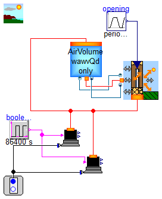

Package Content
Modelica definition
Modelica definition
Modelica definition
model test8_ElectricBoiler
Components.AggregateComponents.Heating.ElectricBoiler ElectricBoiler(Td = 273.15 + 70, Vboiler = 0.1, Pnom = 20000);
Modelica.Thermal.HeatTransfer.Components.ThermalConductor thermalConductor(G = 5);
Modelica.Thermal.HeatTransfer.Sources.FixedTemperature fixedTemperature(T = 295.15);
Modelica.Electrical.Analog.Sources.SineVoltage sineVoltage(V = 220, freqHz = 50);
Modelica.Electrical.Analog.Basic.Ground ground;
Components.BaseComponents.Water.Sinks.WaterSink_W sink_P_fixed;
Components.BaseComponents.Water.Sources.WaterSource_PT_fixed source_PT_fixed(T0 = 273.15 + 25);
Modelica.Blocks.Sources.BooleanStep booleanStep;
Components.BaseComponents.Water.Pipes.BaseClasses.WaterPipeExchangingElement pipeExchangingElement;
Modelica.Blocks.Sources.Pulse pulse(startTime = 3600, period = 3600, width = 0.5, amplitude = 0.01);
equation
connect(thermalConductor.port_b, ElectricBoiler.e);
connect(thermalConductor.port_a, fixedTemperature.port);
connect(ElectricBoiler.p, sineVoltage.p);
connect(sineVoltage.n, ElectricBoiler.n);
connect(sineVoltage.n, ground.p);
connect(booleanStep.y, ElectricBoiler.ON);
connect(sink_P_fixed.Win, pulse.y);
connect(ElectricBoiler.water_flange1, source_PT_fixed.water_flange);
connect(ElectricBoiler.water_flange2, pipeExchangingElement.water_flange1);
connect(pipeExchangingElement.water_flange2, sink_P_fixed.water_flange);
end test8_ElectricBoiler;
Modelica definition
model test9_FuelBoiler
Components.AggregateComponents.Heating.FuelBoiler FuelBoiler(Td = 273.15 + 70);
Modelica.Thermal.HeatTransfer.Components.ThermalConductor thermalConductor(G = 10);
Modelica.Thermal.HeatTransfer.Sources.FixedTemperature fixedTemperature(T = 295.15);
Components.BaseComponents.Water.Sources.WaterSource_PT_fixed source_PT_fixed(T0 = 273.15 + 15);
Modelica.Thermal.HeatTransfer.Components.ThermalConductor thermalConductor1(G = 3);
Modelica.Thermal.HeatTransfer.Components.ThermalConductor thermalConductor2(G = 3);
Modelica.Blocks.Sources.BooleanStep booleanStep(startTime = 2000);
Components.AggregateComponents.Heating.RoomHeater roomHeater;
Modelica.Thermal.HeatTransfer.Components.ThermalConductor thermalConductor3(G = 3);
equation
connect(thermalConductor.port_b, FuelBoiler.e);
connect(thermalConductor.port_a, fixedTemperature.port);
connect(thermalConductor1.port_a, fixedTemperature.port);
connect(thermalConductor2.port_a, fixedTemperature.port);
connect(booleanStep.y, FuelBoiler.ON);
connect(thermalConductor3.port_b, fixedTemperature.port);
connect(roomHeater.heatPort, thermalConductor3.port_a);
connect(FuelBoiler.water_flange2, roomHeater.water_flange1);
connect(FuelBoiler.water_flange3, roomHeater.water_flange2);
connect(FuelBoiler.water_flange1, source_PT_fixed.water_flange);
end test9_FuelBoiler;

Modelica definition
model Test_Office_01
Office.DesktopComputer desktopComputer(ReleaseQ = true);
Office.DesktopComputer desktopComputer1(ReleaseQ = true);
Components.AggregateComponents.Electrical.FixedACsupply_socket_withGround fixedACsupply_socket_withGround;
inner BoundaryConditions.AmbientConditions ambient_settings(Ta_Yex = 20, acv = EEB.Types.AmbCondVariabilty.ACV_variable, Ta_avg = 288.15);
Components.BaseComponents.Air.Volumes.AirVolume_only_wawvQdport V1(V = 20);
Components.AggregateComponents.Envelope.Openings.ExtenallWindow_Opening_DoubleGlass
Window(material_glass =
EEB.Media.Materials.Glasses.Glass(), material_gas =
EEB.Media.Materials.EnvelopeGases.Air());
Modelica.Blocks.Sources.Trapezoid opening(rising = 20, falling = 20, startTime = 100, amplitude = 1, width = 120, period = 7200);
Modelica.Blocks.Sources.BooleanPulse booleanPulse(width = 40, period = 86400, startTime = 8 * 3600);
equation
connect(opening.y, Window.opening01);
connect(V1.heatPort, Window.absToWall);
connect(desktopComputer1.heatPort, Window.absToWall);
connect(desktopComputer.heatPort, Window.absToWall);
connect(booleanPulse.y, desktopComputer1.ON);
connect(booleanPulse.y, desktopComputer.ON);
connect(desktopComputer.plug, fixedACsupply_socket_withGround.socket);
connect(desktopComputer1.plug, fixedACsupply_socket_withGround.socket);
connect(V1.dryair, Window.dryair);
connect(V1.diffuse, Window.diffuse);
connect(V1.vapour, Window.vapour);
end Test_Office_01;
Modelica definition
model Test_Office_02
Office.DesktopComputer desktopComputer(ReleaseQ = true);
Office.DesktopComputer desktopComputer1(ReleaseQ = true);
Components.AggregateComponents.Electrical.FixedACsupply_socket_withGround fixedACsupply_socket_withGround;
inner BoundaryConditions.AmbientConditions ambient_settings(Ta_Yex = 20, acv = EEB.Types.AmbCondVariabilty.ACV_variable, Ta_avg = 288.15);
Components.BaseComponents.Air.Volumes.AirVolume_wawvQdPort V1(V = 5 * 4 * 3);
Components.AggregateComponents.Envelope.Openings.ExtenallWindow_Opening_SingleGlass
Window(L = 3, H = 3, s = 0.05, material =
EEB.Media.Materials.Glasses.Glass(), orientation = 180, wnom = 0.0001, dpnom = 1000);
Modelica.Blocks.Sources.Trapezoid opening(rising = 20, falling = 20, amplitude = 1, width = 120, period = 12 * 3600, startTime = 8 * 3600);
Modelica.Blocks.Sources.BooleanPulse PCuse(width = 40, period = 86400, startTime = 8 * 3600);
Components.AggregateComponents.Envelope.Walls.ExtenallWall_NoOpenings_Homogeneous
extenallWall_NoOpenings_Homogeneous(L = 4, H = 1, orientation = 180, lambda = 0.4);
Components.AggregateComponents.Heating.FanCoil fanCoil(ncoil = 5, gammaTubeMetal = 100, gammaMetalExternal = 20, Lcoil = 5);
Components.AggregateComponents.Heating.IdealControlledFluidHeater idealControlledFluidHeater;
Components.BaseComponents.Water.Pressurisers.IdealWaterPressuriser_pfixed idealWaterPressuriser;
Modelica.Blocks.Sources.BooleanExpression ON(y = true);
Modelica.Blocks.Sources.RealExpression Twset(y = 273.15 + 55);
Modelica.Blocks.Sources.RealExpression Pspeed(y = 1);
Components.BaseComponents.Water.Pumps.WaterPump_Volumetric waterPump_Volumetric;
Modelica.Thermal.HeatTransfer.Sensors.TemperatureSensor sTa;
Modelica.Blocks.Sources.RealExpression Taset(y = 273.15 + 20);
Controllers.Blocks.Analogue.AWPI_1dof aWPI_1dof(K = 1, Ti = 200);
equation
connect(opening.y, Window.opening01);
connect(PCuse.y, desktopComputer1.ON);
connect(PCuse.y, desktopComputer.ON);
connect(desktopComputer.plug, fixedACsupply_socket_withGround.socket);
connect(desktopComputer1.plug, fixedACsupply_socket_withGround.socket);
connect(Window.absToWall, extenallWall_NoOpenings_Homogeneous.airInt);
connect(V1.heatPort, extenallWall_NoOpenings_Homogeneous.airInt);
connect(desktopComputer1.heatPort, extenallWall_NoOpenings_Homogeneous.airInt);
connect(desktopComputer.heatPort, extenallWall_NoOpenings_Homogeneous.airInt);
connect(fanCoil.air_flange2, V1.air_flange2);
connect(fanCoil.air_flange1, V1.air_flange1);
connect(ON.y, idealControlledFluidHeater.ON);
connect(idealControlledFluidHeater.To, Twset.y);
connect(Pspeed.y, waterPump_Volumetric.cmd);
connect(sTa.port, extenallWall_NoOpenings_Homogeneous.airInt);
connect(aWPI_1dof.SP, Taset.y);
connect(aWPI_1dof.PV, sTa.T);
connect(fanCoil.icmd01, aWPI_1dof.CS);
connect(idealControlledFluidHeater.water_flange2, idealWaterPressuriser.water_flange1);
connect(idealWaterPressuriser.water_flange2, fanCoil.water_flange1);
connect(fanCoil.water_flange2, waterPump_Volumetric.water_flange1);
connect(waterPump_Volumetric.water_flange2, idealControlledFluidHeater.water_flange1);
connect(V1.dryair, Window.dryair);
connect(Window.diffuse, V1.diffuse);
connect(Window.vapour, V1.vapour);
end Test_Office_02;
Automatically generated Mon Jun 1 16:09:53 2020.